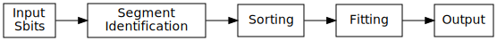

ME0 Segment Finding
Table of Contents
- Segment Finding Algorithm
- Firmware Implementation
- Testbench
- Resource Utilization
- Presentations
- Source Code
Segment Finding Algorithm
Each ME0 chamber is composed of 6 layers of GEMs.
Each layer is composed of 8 partitions in eta, each of which is split into 384 strips in phi.
[ put an image of the chamber here ]
The trigger output of a GEM chamber is a binary readout called an “S-bit”, which is the OR of two adjacent strips. The resolution of a ME0 chamber in the trigger path is therefore 1/2 of the fundamental resolution, or 8x192 strips per layer.
In summary, and ME0 Chamber has:
- 6 layers
- each layer has 8 eta partitions
- each eta partition has 384 strips (192 s-bits)
- 1536 sbits / layer / bx * 6 layers = 9216 sbits / bx
The basic goal of segment finding in ME0 is that we want to:
- Identify multi-layer segments
- Do some refined angular/position calculation using multi-layer hit data
In a somewhat abstract sense, the mechanism to do this segment identification is along the lines of:
- Need to identify segments locally
- Create “segment candidates” with some sortable key field
- Done in parallel, many times
- Need to sort segment candidates into a smaller number of output candidates
- Development of sorting machinery can be somewhat decoupled from the exact segment identification mechanism
- Perform some post-processing on the segment candidates to produce a refined measurement (some kind of fit)

Input Hits Processing
This segment finder is designed to find multi-layer segments in ME0.
The pattern finder works by looking at the chamber in two dimensional slices, where bending in the phi direction can be observed. Each slice corresponds to 6 layers of the ME0 chamber for a given eta partition.
For example, a cross-sectional view of a muon track may look something like this
(chamber is truncated between /// marks).
0 ---> 191
ly0 -------------+-----------------------------------------///--------------------------------------
ly1 --------------+----------------------------------------///--------------------------------------
ly2 ---------------+---------------------------------------///--------------------------------------
ly3 ----------------+--------------------------------------///--------------------------------------
ly4 -----------------+-------------------------------------///--------------------------------------
ly5 ------------------+------------------------------------///--------------------------------------
^ track
Our goal in segment finding is to:
- Identify segments
- Measure the position of the segment
- Measure the bending angle of the segment
Cross-partition data sharing
How to look at eta ??
Chamber staggering
Are the chambers staggered? if so we need de-staggering
Alignment ??
Are alignment corrections required?
Centroid Identification
GEM hits are read out as individual strips, and produce clusters with a fairly large distribution.
The center of this cluster corresponds to the center of the charge distribution.
Because the road based pattern finder prefers straighter patterns (higher pT), performing pattern finding on the raw GEM hits produces a bias which truncates the outer edges of the clusters and incorrectly assigns narrower patterns than should be found.
To prevent this, a first processing stage of the GEM data is to convert the clusters into individual strip hits. This is currently done using a simple average within a moving window.
to be described in detail....
When the centroid lies between strips, this filtering stage leaves two strips on at once. This is taken into account in later processing stages.
Segment Candidate Identification
Centered around each strip is a pattern identification block called a “pattern unit”.
A pattern unit looks at a subset of the partition’s data, and identifies segment candidates which are roughly centered around a given strip.
To minimize latency, each bunch crossing a number of independent pattern unit modules operate in parallel to find pattern candidates for each of the strips in the chamber.
For example, in the following diagram we show the “window” that a pattern unit centered on strip #20 might look at:
0 20 ---> 191
┌────────────────────────────────────┐
ly0 --│--------------+---------------------│-------------------///--------------------------------------
ly1 --│---------------+--------------------│-------------------///--------------------------------------
ly2 --│----------------+-------------------│-------------------///--------------------------------------
ly3 --│-----------------+------------------│-------------------///--------------------------------------
ly4 --│------------------+-----------------│-------------------///--------------------------------------
ly5 --│-------------------+----------------│-------------------///--------------------------------------
└────────────────────────────────────┘
^ track
Within a pattern unit we look only at the boxed area, and can consider looking at a slice of data ranging within +- some range (the range is determined from the width of the maximally wide pattern). Here we use +- 18 as an example.
┌────────────────────────────────────┐ │--------------+---------------------│ │---------------+--------------------│ │----------------+-------------------│ │-----------------+------------------│ │------------------+-----------------│ │-------------------+----------------│ └────────────────────────────────────┘ -18 <-- 0 --> 18
Each pattern unit looks for patterns (or roads) which are centered around a given strip, at different bending angles.
For example, two patterns with different bending angles might look something like:
- Pattern #14
ly0 xxxx----- ly1 -xxxx---- ly2 ---xxx--- ly3 ---xxx--- ly4 ----xxxx- ly5 -----xxxx
- Pattern #1
ly0 ----------------------------xxxxxxxxx ly1 ------------------------xxxxxxxxx---- ly2 ----------------xxxxxxxxxxxx--------- ly3 ---------xxxxxxxx-------------------- ly4 ----xxxxxxxxx------------------------ ly5 xxxxxxxxx----------------------------
If we were to overlay the above pattern #14 onto the data shown above, we would see this:
┌─────────────────────────────────────┐ │-------------xx+x--------------------│ │--------------xx+x-------------------│ │----------------x+x------------------│ │----------------xx+------------------│ │------------------x+xxx--------------│ │-------------------x+xxx-------------│ └─────────────────────────────────────┘ -18 <-- 0 --> 18
In this case, we can see that 6 hits (designated by +) fall within the pattern
mask (designated by x), so we say that for this pattern the layer count is 6.
The high layer count (6) is because this pattern is a good match for the actual data.
If instead we overlay pattern #1 on this data we see
┌─────────────────────────────────────┐ │---------------+------------xxxxxxxxx│ │----------------+-------xxxxxxxxx----│ │----------------x+xxxxxxxxxx---------│ │---------xxxxxxxx-+------------------│ │----xxxxxxxxx------+-----------------│ │xxxxxxxxx-----------+----------------│ └─────────────────────────────────────┘ -18 <-- 0 --> 18
In this case only one of the hits falls within the pattern mask, so the layer count is only 1. Following this example, we can use the layer count for each pattern as a metric for the quality of the pattern.
For the entire collection of patterns in a pattern unit, a sorting tree looks through this collection of data and returns a single pattern which is determined to have the highest “quality”.
The sorting metric is:
- Choose the pattern with the highest layer count
- If multiple patterns have the same layer count, choose the one with the highest pattern id (higher pattern IDs correspond to straighter patterns, or higher momentum particles).
The single pattern that is chosen for each pattern unit
- Layer count (the number of layers hit in the pattern)
- Pattern ID (a unique number representing the pattern; higher pattern IDs are straighter)
- Collection of 6 centroids (describes the position of a hit within the pattern mask)
Centroid finding
To minimize resource usage and keep acceptance high, the patterns are defined to be fairly wide. To avoid losing resolution in this wide patterns, however, along with each layer of a pattern a centroid is found and saved for later stages of processing.
┌─────────────────────────────────────┐ │-------------xx+x--------------------│ │--------------xx+x-------------------│ │----------------x+x------------------│ │----------------xx+------------------│ │------------------x+xxx--------------│ │-------------------x+xxx-------------│ └─────────────────────────────────────┘ -18 <-- 0 --> 18
For example, in the pattern above we have six layers composed of:
01234 1. xx+x centroid = 2 2. xx+x centroid = 2 3. x+x centroid = 1 4. xx+ centroid = 3 5. x+xxx centroid = 1 6. x+xxx centroid = 1
The centroid simply describes the location of the charge cluster within the pattern mask.
This is used during a later stage of the firmware to convert the location within the centroid into a location relative to the center of the pattern unit.
In many/most cases more than 1 adjacent strip will be fired. In this case the centroid finder produces some estimate of the center of the charge cluster.
e.g. This example will produce a centroid of 3, since it is the center of the 3 active strips.
0123456 xx+++xx ^ centroid = 3
The implementation of the centroid finder is a lookup-table generated by a python script, so the firmware is flexible to accomodate different algorithms for centroid finding.
Edge Padding
(Some pattern units run off the left and right edges of the chamber and need to be zero-padded)
Ghost Cancellation
(because of wide patterns, the same hits will produce multiple strips.. cancel off these neighboring “ghosts”)
Partition Pre-Sorting
For each partition, every bunch crossing a collection of 192 segments is produced in the pattern units.
This will be later sent into “true” bitonic sorters, but to reduce the computational difficulty of the bitonic sorting stage, the segments are first passed through a crude sorting tree.
This takes advantage of the fact that generally we are less interested in multiple segments appearing in neighboring partitions, since they will often simply be ghosts of one another.
Thus, we restrict the chamber to only accept one segment for every N strips, reducing the # of segments that need to be sorted by a factor of N.
Chamber Segment Selection
Choose from (8 partitions * 192/N segments) -> M segments, where N is the pre-sorting factor from the previous stage.
Centroid Coordinate Transformation
f (pattern id, 6x centroids) → 6x hit position
Fitting
A standard linear fit follows a formula:
\[ \overline{X}=\frac{\sum{}{}x_i}{n} \]
\[ \overline{Y}=\frac{\sum{}{}y_i}{n} \]
\[ m = \frac {\sum{}{}(x_i - \overline{X})(y_i-\overline{Y})}{\sum{}{} (x_i-\overline{X})^2} \]
\[ b = \overline{Y} - m\overline{X} \]
To reduce the computational difficulty in an FPGA, we modify this formula in a few ways.
To defer a division by n and continue more of the calculation in signed arithmetic (rather than fixed point), we instead calculate:
\begin{align*} m =& \frac {\sum{}{}(x_i - \overline{X})(y_i-\overline{Y})}{\sum{}{} (x_i-\overline{X})^2} \\ =& \frac {\sum{}{}(x - \frac{\sum{}{}x_i}{n})(y-\frac{\sum{}{}x_i}{n})}{\sum{}{} (x-\frac{\sum{}{}x_i}{n})^2} \\ =& \frac{n}{n} \frac {\sum{}{}(x - \frac{\sum{}{}x_i}{n})(y-\frac{\sum{}{}x_i}{n})}{\sum{}{} (x-\frac{\sum{}{}x_i}{n})^2} \\ =& \frac {\sum{}{}(nx - \sum{}{}{x_{i}})(ny_i-\sum{}{}{y_i})} {\sum{}{} (nx_{i}-\sum{}{}x_{i})^2} \end{align*}To make this even simpler, we take advantage of the fact that the range of the divisor in the above equation is limited to a maximum value of 630.
This is because the x values represent the layer count, which is simply the set
of layers hit (0, 1, 2, 3, 4, 5) where not all layers are necessarily hit.
The upper bound on this number then is just:
\[ 630 = 6^2 \times ( (0 - 2.5)^2 + (1 - 2.5)^2 + (2 - 2.5)^2 + (3 - 2.5)^2 + (4 - 2.5)^2 + (5 - 2.5)^2 ) \]
This was found by brute force exhausting the entire possibility of combinations.
Since the divisor only has a small range of values possible, the division is re-written as a multiplication by the reciprocal of the number. All possible values of this are encoded in a lookup table as a fixed point value. This transforms a division into a fixed point multiplication, which is computationally much simpler.
\[ m = \sum{}{}(nx - \sum{}{}{x_{i}})(ny_i-\sum{}{}{y_i}) \times reciprocal(\sum{}{} (nx_{i}-\sum{}{}x_{i})^2) \]
With this, the slope is still expressed by the same formula as above, with a multiplication by a factor of 1/n (stored in a lookup table) used in place of a division by n.
\[ b = \overline{Y} - m\overline{X} = \frac{\sum{}{}y_i}{n} - m \frac{\sum{}{}x_i}{n} = \frac{\sum{}{}y_i - m \sum{}{}x_i}{n} = (\sum{}{}y_i - m \sum{}{}x_i) \times reciprocal(n) \]
This intercept (b) represents the intercept in a coordinate system where the
layers are numbered (0 1 2 3 4 5) and so the intercept is the strip along the
edge of the chamber (on the 0th layer).
To better represent the pattern and make the intercept in the center of the chamber, we do a simple coordinate transformation:
\[ strip = m \times 2.5 + b \]
The number 2.5 is chosen so that the center of the chamber is at 0, with the layers at ±0.5, ±1.5, ±2.5. The output of the fit module is therefore the strip and slope centered in the midpoint of the chamber. Both numbers are output as fixed point numbers.
e.g., for the strip output,
- the number is composed of an integer and decimal part. The integer part represents the strip in integer units. Since the patterns are constructed such that the tracks are always centered around the midpoint of the pattern unit, the integer part of this need only be a few bits to represent the offset from center.
- the fractional part is such that
- fractional bit 0 = 1/2 strip
- fractional bit 1 = 1/4 strip
- fractional bit 2 = 1/8 strip
- and so on..
For the slope output, it is similarly represented in fixed point format, with units of strips/layer. A slope of 0 is a straight track, and a slope of 7 is extremely angled.
The fit operates in a relatively high resolution output by default, but the resolution can be truncated for sending upstream by simply truncating off fractional bits to achieve the desired bandwidth.
Studies are needed to determine the optional (and achievable) resolution from this fit.
Quality of Fit
how to calculate??
Pipelined Multiplication
Some steps of the fit (multiplications) are pipelined into multiple (2) clock cycles.
The basic scheme of the pipelined multiplication is to split the numbers into most-significant and least-significant parts, and multiply the parts independently, summing their products at the end.
e.g. consider the multiplication of two 16 bit numbers, A and B:
\begin{align*} A \times B =& A[15:0] \times B[15:0] \\ =& (A[15:8] \cdot 2^8 + A[7:0]) \times (B[15:8] \cdot 2^8 + B[7:0]) \\ =& (A_{HI} \cdot 2^8 + A_{LO}) \times (B_{HI} \cdot 2^8 + B_{LO}) \\ =& (A_{HI} \cdot 1^8 + A_{LO}) \times (B_{HI} \cdot 2^8 + B_{LO}) \\ =& (A_{HI} \cdot B_{HI} \cdot 2^{16}) + (A_{HI} \cdot B_{LO} \cdot 2^8) + (A_{LO} \cdot B_{HI} \cdot 2^8) + (A_{LO} \cdot B_{LO}) \\ =& (A_{HI} \cdot B_{HI} << 16) + (A_{HI} \cdot B_{LO} \cdot << 8) + (A_{LO} \cdot B_{HI} \cdot << 8) + (A_{LO} \cdot B_{LO}) \\ \end{align*}So, we are able to split a 16x16 bit multiplication into two steps: (1) four 8x8 bit multiplications w/ bitshifting (2) three additions. This allows us to pipeline the multiplication into two clock cycles and achieve timing at 320 MHz. Bitshifting is “free” in the FPGA (just zero padding) so this can easily meet timing.
Reciprocal
The lookup table for the reciprocal LUT is calculated through a simple python script:
print("".join([ " function reciprocal (x : integer; nbits : integer) return sfixed is\n", " begin\n", " if (x<1 or x> 2047) then \n", " assert false report \"invalid reciprocal lookup x=\" & integer\'image(x) severity error;\n", " return to_sfixed(0, 1, -nbits);\n", "".join(list(map(lambda i : " elsif (x=%d) then return to_sfixed(%.20f, 1, -nbits);\n" % (i, 1/i), range(1, 2048)))), " end if;\n", " end;\n"]))
Post-Fit Coordinate Transformation
Transform from local to global coordinates (this is just addition of strip + fit_offset)
f (pat_unit_strip, fit_offset) -> strip
Output Data Format
The currently proposed output data format is:
| Field | Bits | Notes |
|---|---|---|
| Eta | 4 | 16 eta positions (stubs can’t cross more than 2 partitions) |
| Phi | 10 | 768 phi positions (“half strip” resolution) |
| Bend | 9 | 512 different bend angles |
| Quality | 4 | 16 different quality levels |
| Total | 27 | Bits per Segment |
Eta
Phi
Phi is encoded as a number from 0-768
The resolution of the trigger primitive is in the OR of two adjacent strips (0-191) so this is a factor of 4 increase in nominal resolution.
Bend
The bend angle is encoded as a fixed point number
- 4 bits integer bend (units of strips/layer, twos complement signed number)
- 5 bits fractional bend
In fixed point fashion, the interpretation of the fractional bend is that
| Bit | Resolution |
|---|---|
| bit0 | 1/2 strip/layer |
| bit1 | 1/4 strip/layer |
| bit2 | 1/8 strip/layer |
| bit3 | 1/16 strip/layer |
| bit4 | 1/32 strip/layer |
The resolution may be reduced later after further studies are done.
Quality
Firmware Implementation
Configurable Options
Compile Time Options
Firmware
pat_unit.vhd
pat_unit_mux.vhd
partition.vhd
segment_selector.vhd
fit.vhd
Testbench
The firmware is tested against a standalone Python emulator, using CocoTB as the test runner and Questasim (or modelsim, or Aldec Riviera) as the simulator.
Resource Utilization
| LUT | FF | DSP | ||
|---|---|---|---|---|
| Fitting | 1627 | 763 | 0 | Runs at 320MHz, can do 8x fits per bx |
Presentations
Source Code
- Firmware: https://github.com/andrewpeck/me0sf/